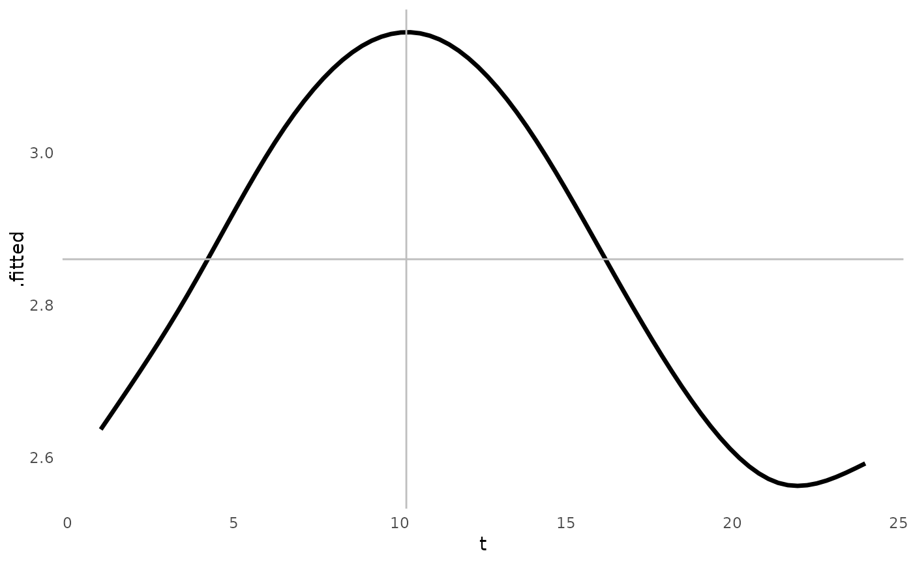
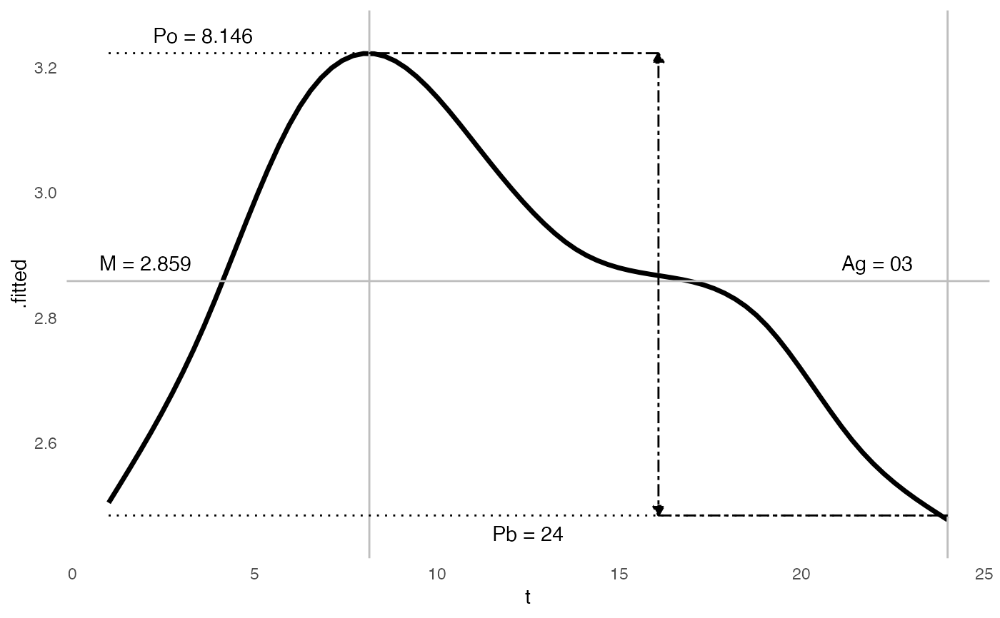

ggplot of cosinor model that can visualize a variety of cosinor model subtypes, including single-component, multiple-component, individual, and population cosinor models, built using cosinor. For single component cosinor, the following values are plotted:
M = midline estimating statistic of rhythm
A = amplitude
P = phi or acrophase (shift from 0 to peak)
If using a multiple-component cosinor, the terms are different. If the periods or frequencies resonate or are harmonic, then the following are calculated. If the periods are not harmonic, the values are just descriptors of the curve.
M = midline estimating statistic of rhythm
Ag = global amplitude, which is the distance between peak and trough (this is the same value as the amplitude from single component)
Po = orthophase (the equivalent of the acrophase in a single component), the lag time to peak value
Pb = bathyphase, the lag time to trough value
Arguments
- object
Model of class
cosinor. If instead of a single cosinor model, multiple objects are to be plotted, can provide a list of cosinor models. Plotting multiple models simultaneously is preferred if the outcome variable is similar in scale.- labels
Logical value if annotations should be placed on plot, default = TRUE. The labels depend on the type of plot. The labels are attempted to be placed "smartly" using the
ggrepel::geom_label_repel()function.- ...
For extensibility. This function will use different implementations based on the type of model (single or multiple component). Attributes of the object will be passed down, or calculated on the fly.
See also
Other cosinor:
augment.cosinor(),
cosinor()
Examples
data(triplets)
m1 <- cosinor(rDYX ~ hour, twins, tau = 24)
m2 <- cosinor(rDYX ~ hour, twins, tau = c(24, 12))
ggcosinor(m1, labels = FALSE)
#> Warning: collapsing to unique 'x' values
#> `geom_smooth()` using formula = 'y ~ s(x, bs = "cs")'

ggcosinor(m2)
#> This is a harmonic multiple-component cosinor object. The orthophase, bathyphase, and global amplitude were calculated.
#> Warning: collapsing to unique 'x' values
#> `geom_smooth()` using formula = 'y ~ s(x, bs = "cs")'

ggcosinor(list(single = m1, multiple = m2))
#> Warning: collapsing to unique 'x' values
#> This is a harmonic multiple-component cosinor object. The orthophase, bathyphase, and global amplitude were calculated.
#> Warning: collapsing to unique 'x' values
#> `geom_smooth()` using formula = 'y ~ s(x, bs = "cs")'
